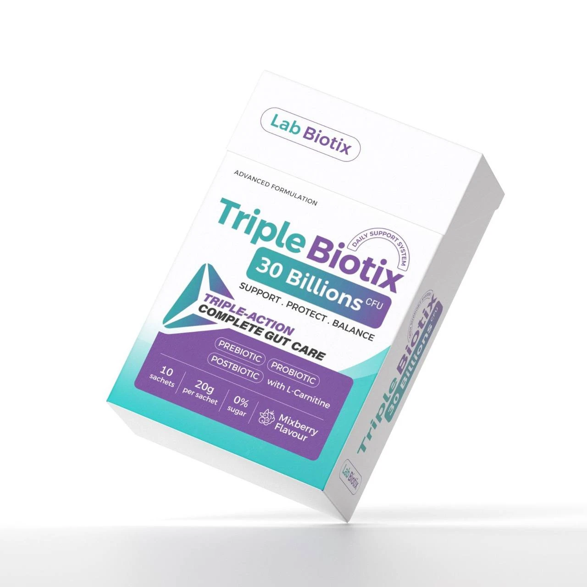
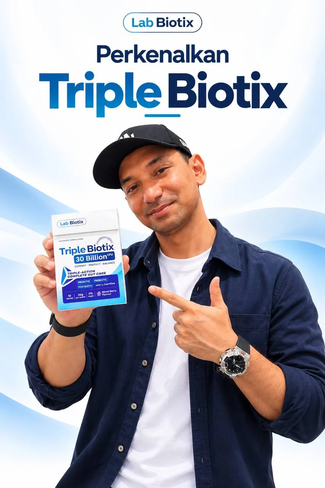
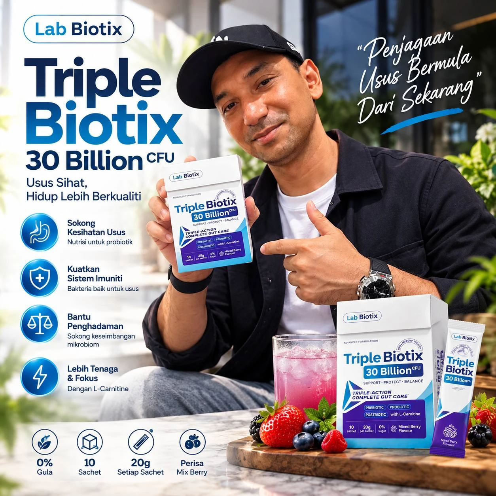
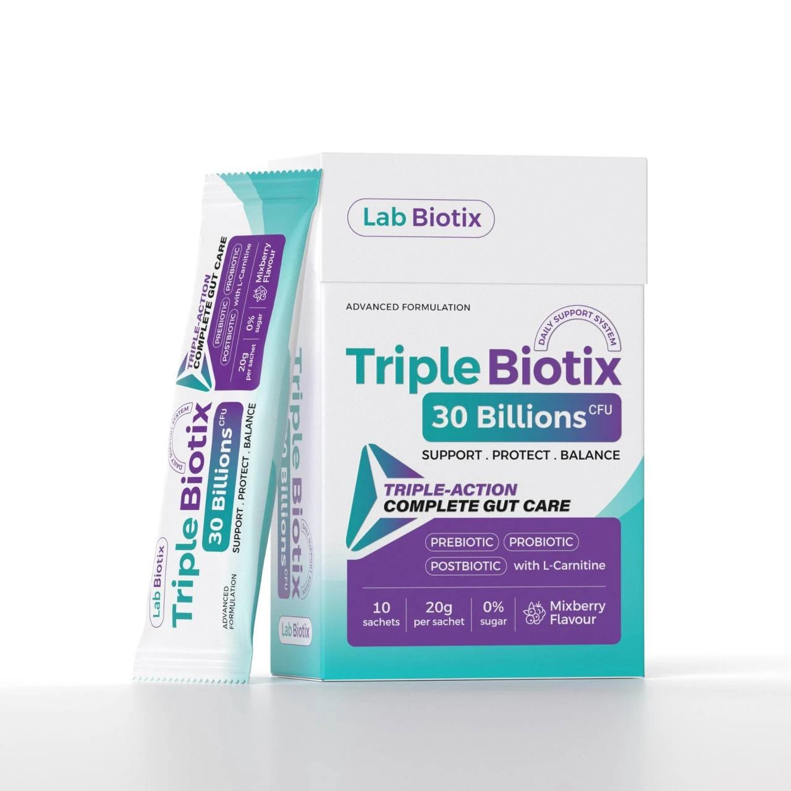

🎈
Perut Kembung & Banyak Angin
Perut rasa penuh, sendawa, kentut berlebihan selepas makan.
Punca Makanan tak dihadam sempurna lalu ditapai bakteria jahat, menghasilkan gas berlebihan.
Usus anda bukan sekadar tempat hadam makanan. Di situlah sebahagian besar sistem imun anda berada, dan ia juga menghasilkan anggaran 90% serotonin badan. Bila usus tak seimbang, satu badan menerima kesannya: cepat letih, kulit kusam, mudah sakit, dan emosi tak stabil.
*Kajian keratan rentas di Malaysia. Rujukan penuh di bahagian bawah laman.
Ramai sangka simptom ini tiada kaitan antara satu sama lain. Hakikatnya, banyak yang berpunca daripada ketidakseimbangan bakteria dalam usus (dysbiosis), iaitu bila bakteria jahat lebih banyak daripada bakteria baik.
Perut rasa penuh, sendawa, kentut berlebihan selepas makan.
2–3 hari sekali, najis keras, rasa tak habis buang.
Pedih, rasa terbakar dan loya, terutama bila lewat makan.
Kerap ke tandas, perut memulas, terutama selepas makan di luar.
Mudah jatuh sakit dan lambat sembuh.
Tak bermaya walaupun cukup tidur, otak berkabut (“brain fog”).
Mudah resah, stres dan tidur tak lena.
Kulit tak berseri dan nafas kurang segar.
Dah jaga makan tapi perut tetap buncit.
Gaya hidup moden secara senyap membunuh bakteria baik setiap hari.
Masalahnya bukan pada simptom. Masalahnya pada usus.
Jadi penyelesaiannya perlu bermula dari dalam: beri makan, tambah & lindungi bakteria baik serentak.
Lihat Penyelesaiannya ↓30 Billion CFU · Triple-Action Complete Gut Care. Support · Protect · Balance.

“Makanan” untuk bakteria baik. Serat khas yang menyuburkan probiotik supaya ia membiak dan kekal di dalam usus.
30 bilion CFU bakteria baik setiap sachet untuk menambah semula populasi bakteria baik dan menyekat bakteria jahat.
Hasil metabolit aktif (seperti asid lemak rantai pendek) yang membantu menguatkan dinding usus dan menyokong imuniti.
Membantu badan menukar lemak kepada tenaga, untuk rasa lebih bertenaga & fokus sepanjang hari.
Nutrisi untuk probiotik
Bakteria baik untuk usus
Sokong keseimbangan mikrobiom
Dengan L-Carnitine

Formula 0% gula dan berasaskan nutrisi harian. Sesuai dijadikan rutin seisi keluarga.
Bagi yang mempunyai penyakit kronik, sedang mengandung atau mengambil ubat preskripsi, dapatkan nasihat doktor sebelum memulakan sebarang suplemen.
1 sachet (20g) sehari
Dengan 150–200ml air sejuk / suhu bilik
Nikmati perisa Mix Berry yang segar
Elakkan air panas kerana suhu tinggi boleh menjejaskan bakteria hidup.

Kementerian Kesihatan Malaysia

Bahan & proses patuh syariah
Dan terus bertambah setiap hari
Tekan gambar untuk paparan penuh.


Setiap pembelian layak menyertai cabutan bertuah Triple Biotix.
Akan dikemaskini tidak lama lagi

Triple Biotix ialah minuman serbuk penjagaan usus lengkap yang menggabungkan Prebiotik, Probiotik (30 bilion CFU) dan Postbiotik, serta L-Carnitine. Satu kotak mengandungi 10 sachet × 20g, perisa Mix Berry dan 0% gula.
Prebiotik ialah makanan untuk bakteria baik. Probiotik ialah bakteria baik itu sendiri. Postbiotik ialah hasil metabolit yang dikeluarkan oleh bakteria baik dan memberi manfaat kepada dinding usus & imuniti. Gabungan ketiga-tiganya bekerja lebih lengkap berbanding probiotik sahaja.
CFU (Colony Forming Units) ialah ukuran bilangan bakteria baik yang hidup. Setiap sachet membekalkan 30 bilion CFU.
Bancuh 1 sachet dengan 150–200ml air sejuk atau suhu bilik, 1 kali sehari. Boleh diambil pada waktu pagi atau sebelum tidur. Jangan bancuh dengan air panas.
Boleh. Triple Biotix mengandungi 0% gula. Namun, jika anda sedang dalam rawatan atau mengambil ubat, kami sarankan berbincang dengan doktor anda terlebih dahulu.
Boleh dijadikan amalan, terutamanya untuk membantu masalah sembelit dan kembung yang biasa berlaku semasa mengandung. Dapatkan nasihat doktor atau pegawai perubatan anda terlebih dahulu sebagai langkah berjaga-jaga.
Sila hubungi kami melalui WhatsApp untuk panduan sukatan yang sesuai mengikut umur anak anda.
Ia berbeza mengikut individu. Ramai pengguna mula rasa perubahan pada penghadaman dalam beberapa hari pertama. Untuk hasil yang lebih konsisten, amalkan sekurang-kurangnya 1 bulan secara berterusan bersama pemakanan seimbang & air yang cukup.
Sesetengah orang mungkin rasa sedikit angin atau perubahan rentak buang air pada hari-hari awal. Ini biasa berlaku semasa usus menyesuaikan diri dengan bakteria baik dan biasanya hilang sendiri.
Boleh, tetapi jarakkan sekurang-kurangnya 2 jam daripada antibiotik supaya bakteria baik tidak terjejas. Rujuk doktor jika anda mengambil ubat preskripsi.
Ya. Sijil HALAL dan KKM dipaparkan di bahagian “Penyelesaian” di atas.
Pilih pakej di bahagian Promosi dan tekan butang “Beli Sekarang”. Anda akan disambungkan terus ke WhatsApp kami untuk pengesahan pesanan. Penghantaran biasanya mengambil masa 2–5 hari bekerja (Semenanjung) dan 5–7 hari bekerja (Sabah/Sarawak).
Simpan di tempat sejuk dan kering, jauh daripada cahaya matahari terus. Tidak perlu disimpan di dalam peti sejuk.
Team kami sedia membantu menjawab soalan dan menguruskan pesanan anda.
WhatsApp Kami Sekarang